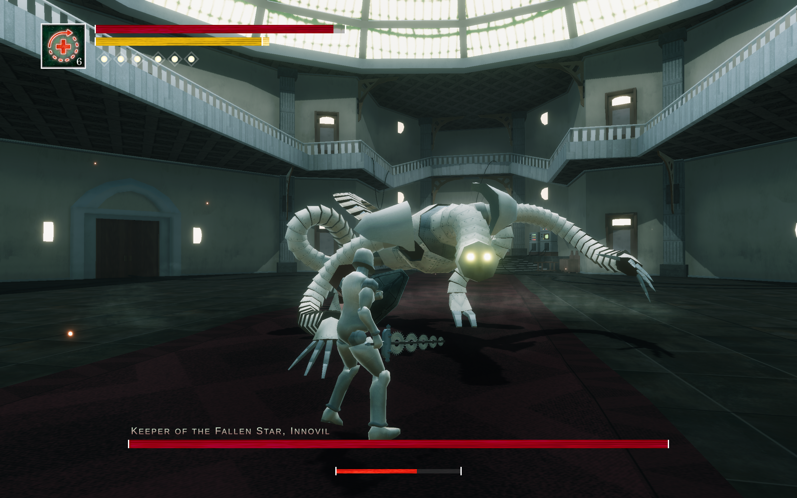

Game Development
2024
Innovil: A Souls-Like Boss Fight

Innovil is a Souls-like boss fight that I developed entirely from the ground up. It was the project I was most passionate about at the time, as I wanted to take responsibility for every aspect of the development and create a complete, satisfying boss fight on my own. I have always been a huge fan of the Souls games by FromSoftware, and they served as a major source of inspiration for this project. The concept for the boss itself had been in my mind for a long time before I finally started developing the game.
Click on this GitHub link to visit the GitHub release page, where you can download the game. Extract the folder and execute the .exe file. The game is playable with an Xbox controller or through Steam using its controller button mapping.


Planning the Project
Before starting development, I created a plan covering the major steps required to build the boss fight from the ground up. This included:
• defining the concept, mechanics, and overall idea
• programming and implementing the movement and camera behaviour
• creating the character model, rig, and animations
• creating the boss model, rig, and animations
• importing the models and implementing the character abilities
• creating the stats and HUD
• programming the boss behaviour
• implementing a hitbox and hurtbox system
• creating assets for particles and the environment
• adding sound effects
• building the environment and lighting
The Idea
The design of the boss originated from a mechanical beast I had created in school. Its appearance was a perfect fit for the project and helped define the overall setting. I decided to make the player character mechanical as well. This allowed me to avoid weight painting the body in Blender, which significantly simplified the character setup and sped up development. The same approach was used for the boss, Innovil.


3D Models, Rigging and Animations
Blender quickly became one of the most enjoyable parts of the project. I was able to model and rig the player character relatively quickly. The boss, however, presented a greater challenge due to its unusual body shape. After studying a few tutorials, I was able to develop a suitable rig and apply it to the model. Its long arms consist of more than 20 individual pieces, making Inverse Kinematics essential for achieving natural and controllable movement.
Each character has around 40 animations, all of which I created in Blender. These range from short reactions, such as staggers, to complete attack combos. Despite the amount of animation work involved, I was able to complete both animation sets within a few weeks.


Movement and Features
I designed the controls around the movement and combat conventions of the Dark Souls franchise.
The game uses a third-person perspective, allowing the player to move freely in 360° while deliberately omitting a jump mechanic.
All gameplay features were programmed in C# using Unity.
The player can perform the following actions:
• camera lock-on and off
• running
• evading
• light attack combo (depending on previous input)
• heavy attack combo (depending on previous input)
• blocking with a shield
• shooting projectiles (6 slots)
• reloading projectiles (3 per reload)
• slow or fast healing (depending on button hold duration)
Programming the character movement and moveset was my favourite part of the development process. I consider Innovil my first major game project, and it taught me a great deal about both effective development practices and the mistakes to avoid. However, the project also came with a fixed deadline, which meant I could not explore every idea as deeply as I would have liked and had to make compromises. One of those compromises was Unity's Animator. The resulting setup became difficult to manage, but remained functional enough to complete the project. This experience taught me that, for future projects, I want to handle more of the animation state transitions through code rather than relying heavily on Animator transitions.
The Impact Shield Feature
When the player raises the shield, an impact bar appears and gradually depletes. This bar determines how effectively an incoming attack can be blocked. The more energy remaining in the impact bar when an attack hits, the more of the impact can be absorbed, in addition to the energy normally consumed by blocking. A perfectly timed block allows the player to gain the maximum amount of energy. If the impact bar is completely depleted, no additional energy can be gained. When the resulting energy change is positive, a blue flash appears instead of the usual red one.
Once the additional energy bar has been completely filled through impact absorption, the player can use that energy to reload their projectiles.

Gameplay
This video shows a complete playthrough of the boss fight and demonstrates all of the implemented gameplay features.